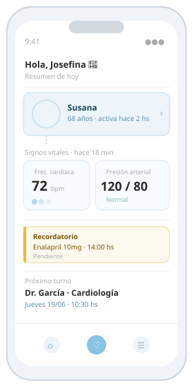

Una plataforma digital que conecta a los adultos mayores con sus familias y médicos, para vivir con autonomía y tranquilidad.
La app
Desde signos vitales hasta turnos médicos, Cerca centraliza toda la información del adulto mayor en una interfaz simple e intuitiva.

Funcionalidades
Seguimiento de signos vitales y actividad desde cualquier lugar. Compatible con wearables comerciales como Apple Watch y Fitbit.
Notificaciones automáticas ante cambios relevantes en la salud, dirigidas a familiares y equipos de emergencias médicas.
Medicación, tratamientos, estudios, patologías preexistentes y eventos clínicos como internaciones, todo en un solo lugar.
Panel compartido con medicación, horarios y indicaciones médicas para que toda la familia esté alineada sin duplicaciones.
Organizá controles médicos pendientes y hacé un seguimiento de los próximos turnos desde la app.
Solicitá que un asistente gestione los turnos médicos por vos, sin llamadas ni trámites.
Para quién
Conocé cómo está tu familiar en todo momento, sin invadir su independencia ni su privacidad.
Accedé al historial actualizado de cada paciente, hacé un seguimiento continuo entre consultas y actuá antes de que aparezcan complicaciones.
Dejanos tu mail y te avisamos cuando estemos disponibles.